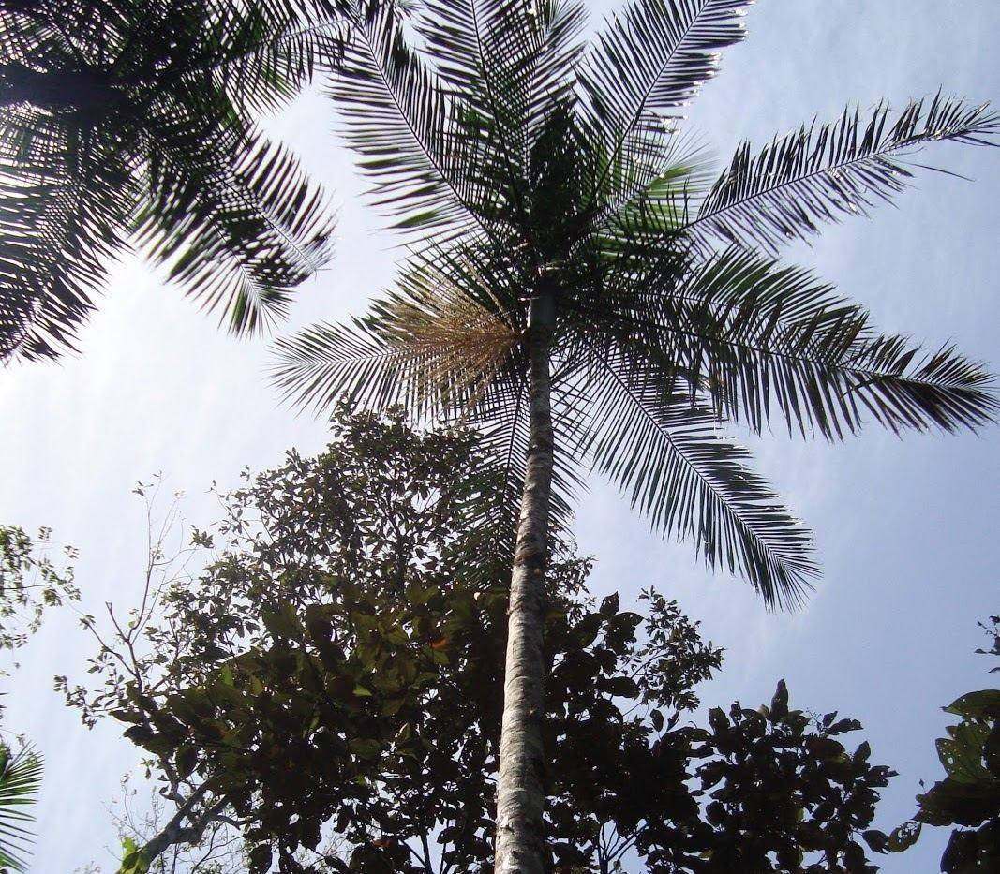

Ciclo 1
(2007 a 2011)
Inventário dos Remanescentes Florestais
Número de espécies observadas
Ao todo, considerando também as coletas realizadas pelo levantamento florístico e de epífitos, foram registradas 2.175 espécies de plantas vasculares de 179 famílias e 797 gêneros: 19 licófitas, 258 samambaias, três gimnospermas e 1.895 angiospermas. Do valor total, 1.352 espécies foram registradas pelo levantamento florístico extra (caminhamento ao redor das UA).
O FlorestaSC registrou 823 espécies nos conglomerados, considerando os componentes arbóreo-arbustivo (DAP ≥ 10 cm), sub-bosque e regeneração natural (DAP < 10 cm). As espécies pertencem a 104 famílias botânicas.


Riqueza de espécies arbóreas e arbustivas encontradas nas principais tipologias de vegetação de SC.
Para mais informações: Acesse o capítulo do livro do FlorestaSC sobre a flora catarinense.
Espécies de árvores e arbustos mais abundantes
Depois do xaxim-bugio, a canela-guaicá foi a espécie arbórea mais abundante nas florestas de SC.
A espécie Ocotea puberula, conhecida popularmente como canela-guaicá, foi a espécie arbórea mais abundante em Santa Catarina. Essa espécie é comum em todas as tipologias florestais do estado, sendo encontrada, principalmente, em florestas secundárias, onde seu crescimento é favorecido.
Distribuição diamétrica (cm) da canela-guaicá (Ocotea puberula).


Frutos da canela-guaicá.
Dez espécies mais abundantes nas florestas amostradas pelo FlorestaSC em Santa Catarina (n = 440; DAP ≥ 10 cm).
Espécies mais abundantes por tipologia florestal em Santa Catarina (n = 440; DAP ≥ 10 cm).
As espécies de samambaias arborescentes Dicksonia sellowiana (xaxim-bugio) e Alsophila setosa (samambaia-açú) merecem ser mencionadas: ambas mostraram-se mais abundantes que as espécies arbóreas citadas acima – a primeira com 6.074 e a segunda com 3.000 indivíduos amostrados nos conglomerados do FlorestaSC.
Espécies que outrora apresentavam alta abundância, como Ocotea catharinensis na Floresta Ombrófila Densa e Apuleia leiocarpa na Floresta Estacional Decidual, não apareceram entre as mais abundantes, provavelmente devido à intensa exploração madeireira conduzida em Santa Catarina. Estas espécies constam como raras e ameaçadas de extinção.
Lista da Flora Ameaçada de Extinção em SC (Resolução Consema nº 51/2014)

xaxim-bugio (Dicksonia sellowiana): samambaia arborescente mais abundante

canela-preta (Ocotea catharinensis): Criticamente em Perigo de Extinção

palmito-juçara (Euterpe edulis): espécie abundante na Floresta Ombrófila Densa
Para mais informações: Acesse o capítulo do livro do IFFSC sobre a estrutura dos remanescentes de SC.
Árvores nos estágios iniciais da sucessão
A araucária foi a espécie mais abundante nos estágios iniciais em SC.
Árvores nestes estágios ou fases da sucessão são aquelas encontradas fora das áreas classificadas como floresta nos mapeamentos disponíveis no começo do IFFSC em 2007 (SAR, 2005/2008; PPMA, 2008).
Foram identificadas 220 espécies de árvores nas áreas dos estágios iniciais. O pinheiro-brasileiro (Araucaria angustifolia), a bracatinga (Mimosa scabrella) e a erva-mate (Ilex paraguariensis) foram as espécies mais abundantes, correspondendo juntas a 15% do número total de indivíduos encontradas nestas áreas.
bracatinga (Mimosa scabrella) e pinheiro-brasileiro (Araucaria angustifolia) ao fundo
Para mais informações: Acesse o capítulo do livro do FlorestaSC sobre a avaliação de áreas situadas fora da floresta (vegetação em estágio inicial e outros usos da terra).
Espécies exóticas
Considerando todos os levantamentos do FlorestaSC (UA em floresta, UA fora da floresta e levantamento florístico por caminhamento), foram registradas 102 espécies exóticas.
Destacam-se os gêneros Eucalyptus, Pinus e Citrus, pela abundância de indivíduos.
Cerca de 45% do total de espécies registradas são herbáceas. Das 102 espécies, somente 12 foram encontradas nos conglomerados – isso significa que apenas essas espécies foram registradas seguramente dentro dos remanescentes florestais. Todas as demais estavam na borda ou nas trilhas que dão acesso aos remanescentes.
Em geral, as espécies exóticas amostradas nos conglomerados apresentaram baixa abundância, com exceção de Hovenia dulcis (uva-do-japão) que, principalmente na Floresta Estacional Decidual, apresentou valores consideráveis, estabelecendo-se entre as 15 espécies mais importantes da fitofisionomia. Em um dos conglomerados na Floresta Estacional Decidual foram encontrados 106 indivíduos de uva-do-japão.
Para mais informações: Acesse o capítulo do livro do FlorestaSC sobre as espécies exóticas.
Hovenia dulcis (uva-do-japão) e regeneração da espécies no interior da floresta.
Foto: Paulo Schwirkowski, Flora Digital.
Riqueza de Epífitos
O grupo dos epífitos vasculares representa 23% do total de espécies registradas pelo FlorestaSC.
Foram registradas 491 espécies de epífitos, sendo 126 espécies de pteridófitas (samambaias e licófitas) e 365 espécies de angiospermas. As famílias com maior riqueza foram Orchidaceae (180 espécies), Bromeliaceae (69) e Polypodiaceae (43). Oito espécies constam como ameaçadas ou raras. A maior riqueza foi encontrada na região norte de SC (nas bacias dos rios Itajaí-açú, Cubatão e Itapocú), o que sugere a região como um potencial hotspot de epífitos vasculares. A elevada diversidade encontrada nessas áreas está associada à alta umidade do ar e ao grau de conservação das florestas.
Duas novas espécies foram descritas com base nessas coletas: uma bromélia e uma orquídea. A bromélia recebeu o nome de Vriesea rubens J.Gomes-da-Silva & A.F.Costa; ela é considerada endêmica de Santa Catarina, ou seja, ocorre somente no estado. A espécie foi descrita com base numa coleta feita no município de Orleans, sendo posteriormente coletada nos municípios de São Martinho e Antonio Carlos. O nome da espécie vem da cor vermelha de suas brácteas.
A orquídea recebeu o nome de Campylocentrum schlechterianum E.Pessoa & M.Alves, uma homenagem a Rudolf Schlechter, um botânico alemão que descreveu diversas espécies do gênero Campylocentrum no início do século XX. Essa espécie foi coletada apenas nos municípios de São Martinho (SC) e Barra do Turvo (SP).
Descobertas:
Novas espécies para a ciência!
Bromélia: Vriesea rubens
Orquídea: Campylocentrum schlechterianum
Para mais informações: Acesse o capítulo do livro do FlorestaSC sobre o levantamento de epífitas.
Riqueza de Pteridófitas
O FlorestaSC registrou 324 espécies de pteridófitas, e a Dicksonia sellowiana foi a espécie de feto arborescente mais abundante.
Conhecidas popularmente como avencas, xaxins ou pteridófitas, o grupo de plantas representado pelas licófitas e samambaias possui alta diversidade em Santa Catarina. Essas plantas podem crescer sobre outras – como as epífitas mencionadas anteriormente –, sobre rochas, sobre o solo ou até na água. São conhecidas 442 espécies para SC; o FlorestaSC registrou 324 espécies, o que representa 73% do total para o estado.
As famílias com maior riqueza de espécies foram Polypodiaceae (48), Pteridaceae (42) e Dryopteridaceae (38). Durante as coletas, 18 novos registros para a flora de Santa Catarina foram feitos, isto é, de espécies que não eram conhecidas para SC.
A maior diversidade foi encontrada na Floresta Ombrófila Densa – 288 espécies, sendo que 128 são exclusivas da tipologia; 177 espécies foram encontradas na Floresta Ombrófila Mista (30 exclusivas) e 57 espécies na Floresta Estacional Decidual (três exclusivas).
A espécie mais abundante na Floresta Ombrófila Mista foi Dicksonia sellowiana, o xaxim-bugio. Na Floresta Ombrófila Densa, espécies dos gêneros Cyathea e Alsophila também se destacaram, sendo muito comuns no sub-bosque.
Agrupamento de Dicksonia sellowiana (xaxim-bugio) na Floresta Ombrófila Mista.
Para mais informações, acesse os artigos:
Estoques das Florestas
Os estoques das florestas são resultados da produção biológica de matéria orgânica através da fotossíntese, que resulta na biomassa florestal. Parte dessa biomassa pode ser convertida em produtos madeireiros e não madeireiros que apresentam utilidade econômica, social ou ambiental, tanto na economia nacional, como na economia local de comunidades ligadas às florestas.
Estima-se que existem em estoque nas florestas nativas de Santa Catarina cerca de 309 milhões de m³ de madeira de fuste.
Estima-se que nas florestas de SC o estoque médio de madeira de fuste das árvores com DAP ≥ 10 cm é de 85,5 m³/ha, somando um total de 309 milhões de m³ de madeira de fuste. Os estoques de madeira foram estimados por meio de modelos volumétricos ajustados com base em árvores cubadas pelas equipes de campo do IFFSC.
Estima-se que SC possui cerca de 184 milhões de toneladas de carbono estocadas acima do solo em suas florestas nativas.
Os estoques aqui apresentados foram obtidos por método indireto de quantificação, através da aplicação de modelos de biomassa e fatores de conversão. Foi considerada a biomassa aérea das árvores vivas.
A biomassa acima do solo total estimada foi de 367 milhões de toneladas e a necromassa total estimada foi de ~39 milhões de toneladas. O carbono total acima do solo nas árvores vivas é de 184 milhões de toneladas.
Estoques médios por hectare (± intervalo de 95% de confiança) e para a área total de floresta em cada tipologia florestal, considerando árvores com DAP* ≥ 10 cm medidas no Ciclo 1 do IFFSC.
*DAP = Diâmetro à altura do peito, medido a 1,30 m do solo.
Os estoques médios por hectare e para área total foram estimados considerando todos os usos da terra nas Unidades Amostrais. Mais informações sobre como as estimativas foram geradas são encontradas nesta nota explicatória.
Estimativas de atributos florestais
Médias e intervalo de confiança (95%) de atributos florestais por tipologia florestal.
Floresta Ombrófila Densa (FOD), Floresta Ombrófila Mista (FOM), Floresta Estacional Decidual (FED)
Para mais informações, acesse o artigo:
Impactos Antrópicos
Evidências de antropismo foram observadas em 94% dos conglomerados. Exploração madeireira foi o impacto antrópico mais frequente (80%).
Após a exploração madeireira, a evidência de antropismo mais frequente foi a ocorrência de roçadas e estradas (49%), seguida por presença e/ou vestígios de animais de grande porte (37%). Em menores proporções, foram observados sinais de exploração não-madeireira (palmito e erva-mate; 14%), a presença de árvores exóticas (13%), vestígios de caça (7%) e fogo (3%).
Destacam-se neste cenário, o corte indiscriminado de palmiteiros na FOD e a conversão de áreas de floresta em pastagens na FOM. Pastagem foi o uso da terra mais frequente observado no entorno dos conglomerados.
Estágios de sucessão das florestas
A maior parte dos remanescentes florestais de Santa Catarina é resultante da sucessão secundária (pós-impacto) – cerca de 97% dos remanescentes amostrados.
Encontram-se em estágio de sucessão avançado 42% das florestas amostradas, 53% encontram-se em estágio de sucessão médio e 2% em estágio de sucessão inicial. Aproximadamente 3% foram classificados como florestas primárias devido à elevada diversidade biológica e estrutural.
Floresta em estágio inicial de sucessão.
Floresta em estágio médio de sucessão.
Floresta em estágio avançado de sucessão.
Para mais informações: Acesse os capítulos do livro do FlorestaSC sobre a avaliação dos estágios sucessionais da floresta.
Diversidade genética
De maneira geral, as análises relativas à diversidade genética das 13 espécies apontaram o aumento da taxa de cruzamento entre parentes próximos. Em termos técnicos, esse fenômeno é chamado endogamia. Assim, com o passar das gerações, ocorre a diminuição da variabilidade genética e, consequentemente, da capacidade dos indivíduos de enfrentar novos cenários ambientais.
Os efeitos da fragmentação florestal, da superexploração e da defaunação são as causas mais evidentes do decréscimo da diversidade genética das espécies avaliadas. Contudo, em alguns locais ainda existem populações com níveis consideráveis de diversidade genética. Nessas áreas, a coleta de sementes com diversidade genética superior pode ser conduzida, visando a produção de mudas.
Para mais informações: Acesse o capítulo sobre o levantamento genético no Ciclo 1, no Livro do FlorestaSC.
.
Levantamento Socioambiental
85% dos entrevistados declararam fazer uso de algum produto florestal nativo.
Ao todo foram 777 entrevistados em Santa Catarina, dos quais 66% eram homens e 34% eram mulheres, com idades variando entre 15 e 91 anos; a maioria dos entrevistados tinha idade superior a 40 anos.
Os entrevistados citaram ao todo 379 espécies (328 foram devidamente identificadas); 20% dos entrevistados apontaram o uso de mais de dez espécies pela família.
Aspectos Gerais
Considerando as diversas categorias de uso das espécies, destacam-se o aproveitamento alimentício, com um total de 1.748 citações, o uso medicinal, pelo maior número de espécies mencionadas, e o uso para energia, com o maior percentual de entrevistados que declararam utilizar espécies nativas para esse fim.
Número de citações, número de espécies nativas declaradas em uso pelos 777 entrevistados e percentagem de usuários em cada categoria de uso.
Espécies mais utilizadas
As espécies florestais mais utilizadas pelos entrevistados em Santa Catarina são a araucária e a guabiroba.
Destaca-se o uso da semente da araucária (pinhão) e dos frutos da guabiroba na alimentação.
*O cipó-mil-homens para uso medicinal foi bastante mencionado, apesar de contraindicado.
Usos madeireiros
Lenha e palanque são os principais produtos madeireiros utilizados pelos entrevistados no meio rural de Santa Catarina.
Do total de entrevistados, 56% (432 entrevistados) afirmaram fazer algum uso de produtos florestais madeireiros. Cerca de 176 espécies foram citadas. Da flora nativa, 95 espécies são utilizadas para obter madeira serrada, madeira laminada, palanques, madeira roliça, entre outros, e 170 espécies são utilizadas para fins energéticos, principalmente como lenha. O uso comercial foi pouco relatado, limitando-se à venda de lenha (5% dos entrevistados).
As espécies de uso madeireiro mais citadas foram: angico (Parapiptadenia rigida), tarumã (Vitex megapotamica), jacatirão (Miconia cinnamomifolia), Araucária (Araucaria angustifolia), imbuia (Ocotea porosa), e bracatinga (Mimosa scabrella).
Principais produtos florestais madeireiros utilizados pelos entrevistados no meio rural de Santa Catarina
Tora de licurana (Hyeronima alchorneoides) proveniente de manejo de floresta secundária em SC sendo processada.
Foto: Heitor F. Uller
Usos não-madeireiros
O aproveitamento alimentício destaca-se entre os usos não madeireiros citados. O pinhão, os frutos diversos e a erva-mate são os produtos mais utilizados.
Foram citadas 274 espécies com algum tipo de uso não-madeireiro. No entanto, somente a araucária (Araucaria angustifolia), com o uso do pinhão, e a erva-mate (Ilex paraguariensis), com o uso das folhas, possuem expressão econômica e social. Por esse motivo, essas são as únicas espécies que apresentam cadeias produtivas razoavelmente organizadas.
Usos alimentícios
Foram citadas 87 espécies para uso alimentício.
Destaca-se o uso do pinhão (27%), da guabiroba (Campomanesia xanthocarpa; 24%) e da pitanga (Eugenia uniflora; 21%). Também foram citadas a cereja (Eugenia involucrata; 16%), o araticum (Annona spp.; 15%), a erva-mate (Ilex paraguariensis; 11%) e a jabuticaba (Plinia peruviana; 10%).
Usos medicinais
O uso medicinal de espécies nativas foi relatado por 53% dos entrevistados.
As espécies mais citadas foram o cipó-mil-homens (Aristolochia triangularis) (24%), a espinheira-santa (Maytenus ilicifolia) (16%), o pau-amargo (Picrasma crenata) (6%), a macela-do-campo (Achyrocline satureioides) (6%) e a carqueja (Baccharis spp.) (5%). O disseminado uso medicinal do cipó-mil-homens em Santa Catarina é motivo de preocupação, tendo em vista que a planta é considerada tumorogênica e abortiva (Mengue et al., 2001).
Usos ornamentais
Para uso ornamental e produção de artesanatos, as espécies nativas mais citadas foram o xaxim-bugio (Dicksonia sellowiana) (principalmente na região do Planalto e na Grande Florianópolis), as orquídeas (principalmente no Vale do Itajaí e no Oeste), o butiá (principalmente no Oeste e Norte) e as bromélias (Vale do Itajaí e na Grande Florianópolis).
Pinhão: destaque no uso alimentício pelas comunidades rurais de SC
Maytenus ilicifolia (espinheira-santa): espécie arbórea de destaque no uso medicinal
Foto: Juliano Pörsch, Flora Digital
Orquídea: (Pleurothallis grobyi)
Florestas plantadas
70% dos entrevistados possuem áreas com floresta plantada, sendo as espécies do gênero Eucalyptus as mais plantadas (53%).
Depois de Eucalyptus spp., as principais espécies plantadas são o Pinus spp. (pinheiro-americano) (24%) e a Hovenia dulcis (uva-do-japão) (8%) e outras em menor proporção (araucária, palmeira-real e palmito). O principal produto florestal extraído das florestas plantadas é a madeira para energia (37%) e para serraria/indústria (27%).
O principal objetivo de plantar florestas citado pelos proprietários de reflorestamentos é a “obtenção de produtos das florestas” (45%) e o segundo mais citado é a “poupança verde” (16%).
Dentre os entrevistados que não possuem plantios, os principais motivos para não plantar são o tamanho reduzido da propriedade (46%) e preferência por outras atividades (10%).
Para mais informações: Acesse o capítulo sobre o levantamento socioambiental no Ciclo 1, no Livro do FlorestaSC.
FlorestaSC
florestasc@furb.br 47 3221-6100
Página migrada de floresta.sc.gov.br.